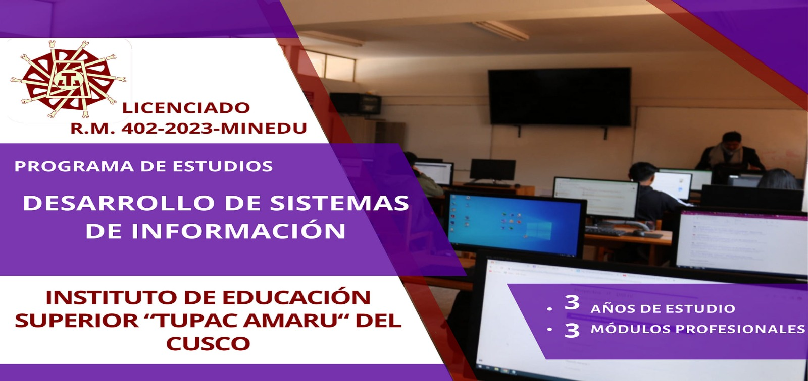

inicio
informacion sobre la carrera
Un sistema de información es un conjunto de componentes interrelacionados que recopilan, procesan, almacenan y distribuyen información para apoyar la toma de decisiones en una organización
nuestras actividades
- desarrollo de aplicaciones de escritorio
- creacion de sitios wed
- analicis de datos
- creacion de base de datos
- conocimineto en redes de informacion
somos estudiantes del tercer semestre de dsi en la que aprendimos ya los puntos anteriores
fases de desarrollo que usamos
| Fase del Desarrollo | Herramienta/Software | Descripción |
|---|---|---|
| Análisis de Requisitos | Jira, Trello | Identificación y documentación de necesidades del cliente. |
| Diseño del Sistema | Lucidchart, Draw.io | Creación de diagramas de flujo y modelos UML. |
| Desarrollo | Visual Studio Code, IntelliJ IDEA | Escritura de código fuente utilizando lenguajes como Java, Python o C#. |
| Pruebas | Selenium, JUnit | Ejecución de pruebas unitarias, de integración y de aceptación. |
| Implementación | Docker, Kubernetes | Despliegue del sistema en entornos de producción. |
| Mantenimiento | Github, GitLab | Actualización y corrección de errores en el sistema. |